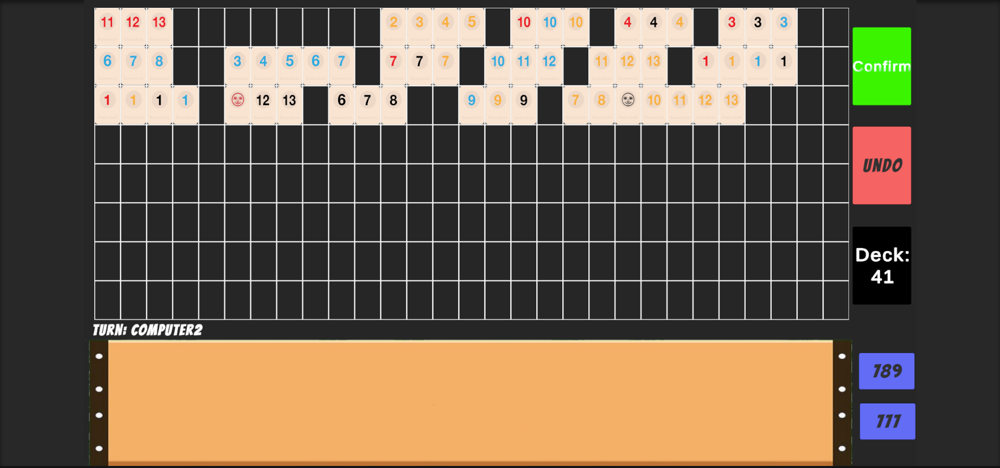
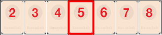

A complete, playable Rummikub board game built in Unity 6 — drag-and-drop tiles, full rule enforcement, undo support, and a rule-based computer opponent. No minimax, no brute force — every placement resolves in O(1).

Everything the real game does — with the data structures doing the heavy lifting.
Runs, groups, jokers, the 30-point initial meld, and win detection — every set on the board is validated before a turn is confirmed.
Grab tiles from your rack and drop them anywhere legal on the 8×29 board. Extend, merge, and rearrange sets freely once your meld is down.
Every move in a turn is tracked on a stack — one click rolls the board back to the last confirmed state.
A layered, deterministic AI that plays full sets, steals spare tiles from board sets, appends loose tiles, and performs multi-step chain extractions — including freeing jokers.
Sets automatically merge when you bridge them and split when you pull a tile from the middle — data structures updated in place.
No board rescans. Two hash tables and a doubly linked list resolve every edge-connection scenario in constant time.
Each player starts with 14 tiles. First meld must total 30+ points from your own rack. First to empty their rack wins.
| Action | How |
|---|---|
| Place a tile | Drag it from your rack onto an empty board slot |
| Extend / merge sets | Drop a tile directly next to an existing set |
| Rearrange the board | Drag tiles between board slots (once your initial meld is down) |
| Confirm your turn | Confirm — validates every set on the board first |
| Take back your moves | UNDO — restores the board to the start of your turn |
| Skip / draw | Click the Deck — draws a tile and passes the turn |
Instead of searching the board for the set a tile belongs to, the game models the board with two hash tables and a custom doubly linked list. Only the two edge tiles of every set are keyed.
cardToSetPos : Dictionary<int, SetPosition> // key = row * 100 + column → set id
validSets : Dictionary<SetPosition, CardsSet> // set id → the actual set
CardsSet : DoublyLinkedList<Card> // O(1) add/remove at both ends, O(1) append
When a tile is dropped at (row, col), the engine hashes its two horizontal neighbors
(key ± 1) and lands in exactly one of four O(1) scenarios:
| Scenario | Neighbor keys found | Work done |
|---|---|---|
| New set | none | Create set, key the tile |
| Extend left edge | right only | Prepend to linked list, move the edge key |
| Extend right edge | left only | Append to linked list, move the edge key |
| Merge two sets | both | Append one linked list to the other — O(1) — re-key edges |
Pulling a tile back off is the mirror image: edge tiles detach in O(1), while pulling from the middle splits the linked list into two sets — O(k) for the k tiles that change set identity, the theoretical minimum.
